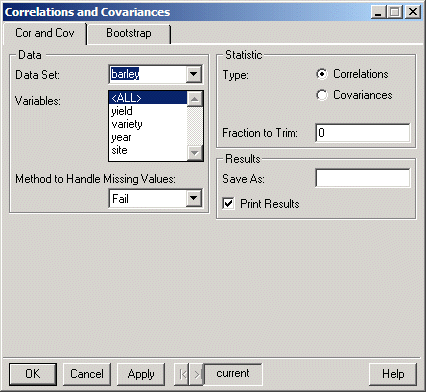
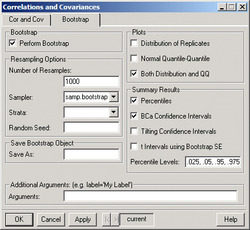

Click individual fields in the dialog below for more specific information.
Click individual fields in the dialog below for more specific information.S+Resample GUI Reference
|
Correlations and Covariances
The Correlations/Resample dialog calculates correlation and variance/covariance matrices, and allows bootstrapping to obtain standard errors or confidence intervals for the estimated correlations or covariances.
To compute correlations and covariances matrices:
Choose Statistics Data Summary Correlations/Resample. The dialog shown below appears.
Cor and Cov Page
Click individual fields in the dialog below for more specific information.

Bootstrap Page
Click individual fields in the dialog below for more specific information.

Related S-Plus language functions:
cor, var
Resampling functions:
bootstrap, bootstrap2, plot.resamp, qqnorm.resamp, summary.resamp, limits.percentile, limits.bca, limits.tilt, limits.t.